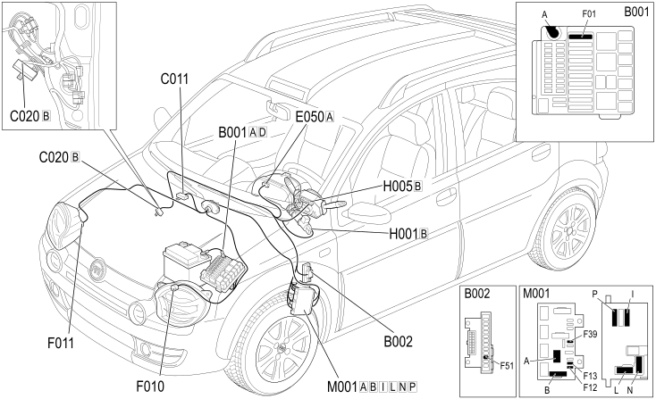

E2011 DIPPED HEADLIGHTS - COMPONENT LOCATION
- Path
- Electrical equipment > 1 ELECTRICAL FUNCTIONS > E20 INTERIOR LIGHTING > E2011 DIPPED HEADLAMPS > E2011 DIPPED HEADLIGHTS - COMPONENT LOCATION
- Kind
- component location drawing
- Applies to
- engines: 1.3 JTD 16v; all production periods; only with equipment: SUV
- Interactive page
- https://sloeber94.github.io/elrnDB-fPnd/en/#/169002303
Applies to: engines: 1.3 JTD 16v; all production periods; only with equipment: SUV
Component location

COMPONENTS
Component code | Description | Reference to the assembly |
|---|---|---|
engine compartment junction unit | ||
Junction unit under dashboard | ||
Right front earth | - | |
Passenger dashboard earth | - | |
Instrument panel | ||
Left headlamp | ||
Right headlamp | ||
Ignition switch | ||
Steering column switch unit | ||
Body computer |
Topics linked from this page (16)
- 5505A multi-function components
- 5505C vehicle compartment wiring
- 5520A ignition switch
- 5540B HEADLAMPS
- 5550A stalk unit
- 5560B analogue control panel
- E50 ENGINE CONTROL AND MANAGEMENT SYSTEMS
- B001 JUNCTION UNIT
- B002 JUNCTION UNIT UNDER DASHBOARD
- C011 RIGHT FRONT EARTH
- C020 PASSENGER SIDE DASHBOARD EARTH
- F010 LEFT HEADLAMP
- F011 RIGHT HEADLAMP
- H001 IGNITION SWITCH
- H005 STEERING COLUMN SWITCH UNIT
- M001 BODY COMPUTER